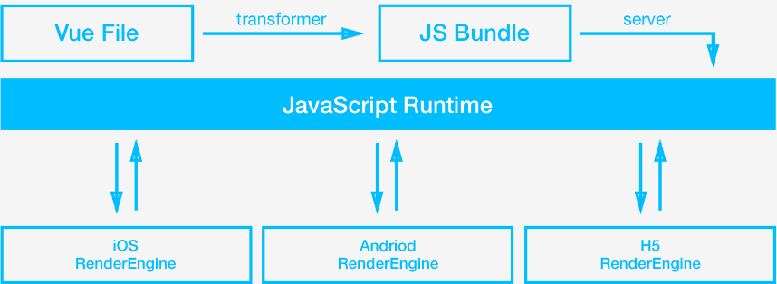
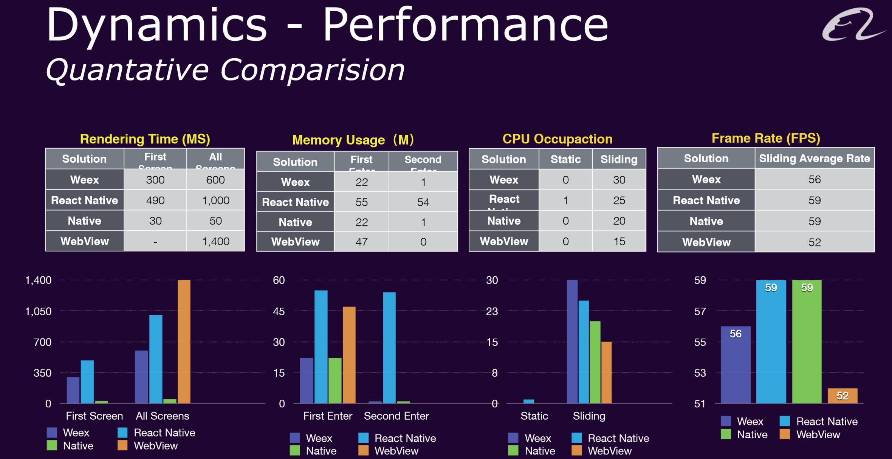
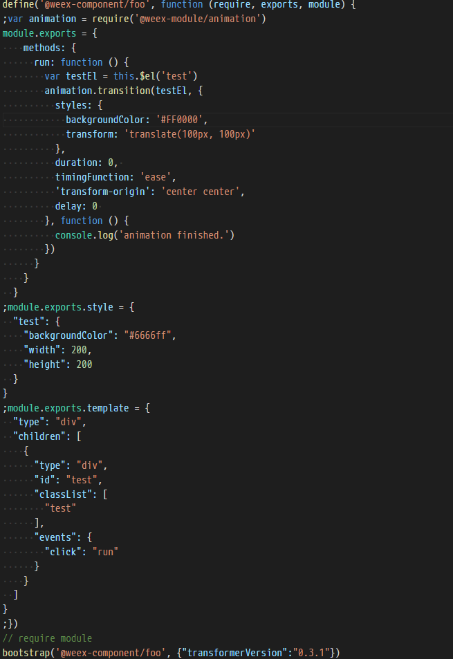
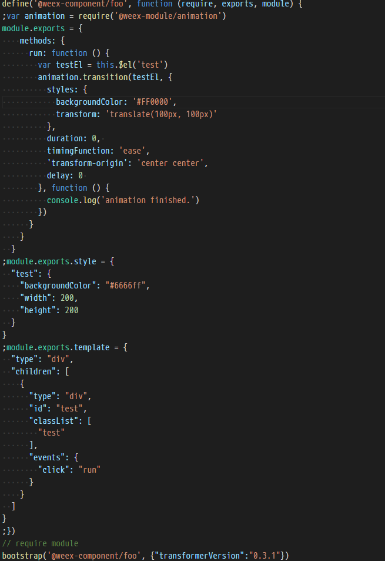
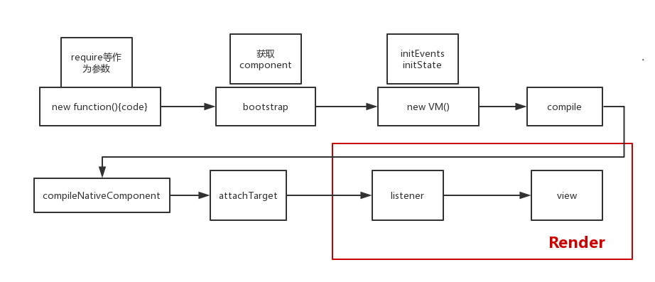
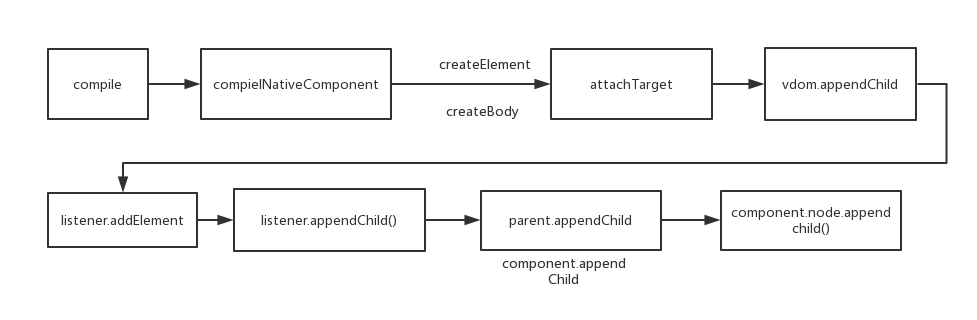
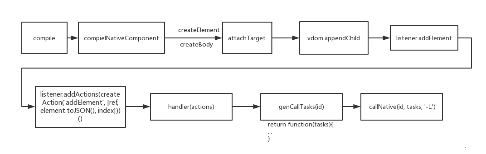
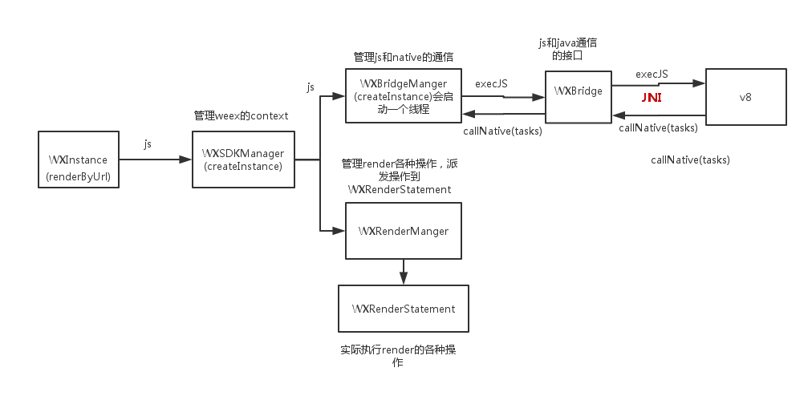
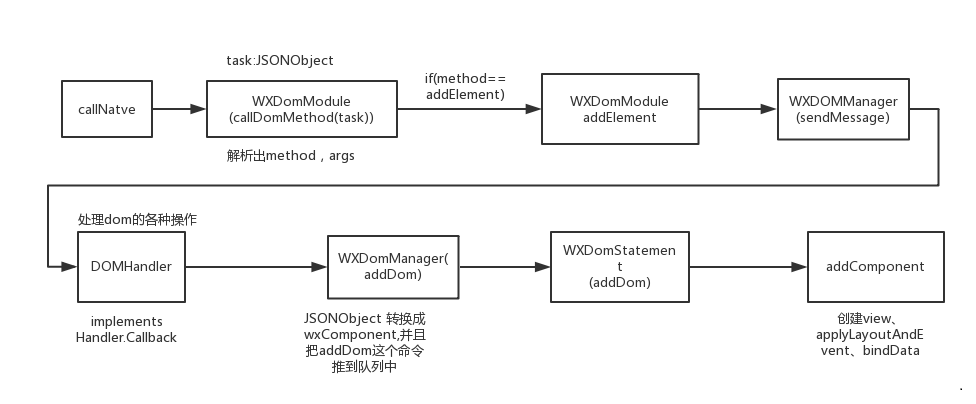

李冬琳
上次分享遗留的几个问题
Q&A
- 对于css，在js引擎内没有内存计算，在h5渲染时只是进行单位换算后直接写在dom.style上，native渲染用的css-layout(改名为yoga了)进行计算，然后进行动态布局
- 不支持百分比布局，按宽度为750进行布局，最后会根据当前的屏幕大小做换算成px(value = value * window.innerWidth / 750)
- css样式不支持继承，(官方支持的属性)
- overflow是hidden，要实现带滚动的布局可以使用内置的scroller组件
- 不支持z-index
- 事件、动画
weex
概况
- 跨平台：一套代码三端运行
- 动态化（无需发版即可更新APP）
- weex已捐献给Apache基金会，star数1.1w+
- weex@0.9.5已全面拥抱vue2.0,内置的js-runtime已经改成vue2.0，支持vue-router,vue-loader,vuex
- 目前生态也越来越丰富，支持在线编写，然后用playground预览native效果
- 本地开发用weex-toolkit进行调试编译
- 
特点（官方）
- 轻量（体积小巧，语法简单，方便上手）
- 可扩展（业务方可自行横向定制 native 组件和 API）
- 高性能（快速加载，快速渲染，体验流畅）
- 组件化（组件之间通过 webcomponents 的设计完美的隔离，并可以通过特定的方式进行数据和事件的传递）
- 多端统一（iOS、Android、HTML5 ）
- 生态&链路（各式各样的工具和平台）
性能
和React-Native对比
- 优点
- 入门简单
- 性能上有一点点优势
- 一次开发，多平台运行
- 缺点
- 社区不够活跃，资料较少
开发
- template官方内置的只有有限的标签，但是基本够用，比如div、text、input、textarea、a等等常见标签，但是支持自定义标签，所以可以无限扩展
- weex内置提供list、slider、web、scroller等组件
- css是使用的css-layout, 是前端所用的css的一个子集，只支持部分属性，未来会支持更多
- 为了渲染性能，只支持单class选择器，不支持属性选择器和关系选择器
开发
 =>
 =>
=>
 =>
原理
- 编译运行 
渲染
- H5: 
- Native: 
Native
Native接入
- 在android studio中新建一个android工程
- 修改build.gradle 加入如下基础依赖
compile 'com.android.support:recyclerview-v7:23.1.1' compile 'com.android.support:support-v4:23.1.1' compile 'com.android.support:appcompat-v7:23.1.1' compile 'com.alibaba:fastjson:1.1.46.android' compile 'com.taobao.android:weex_sdk:0.5.1@aar' - 在app的初始化代码中初始化SDK Engine
public class MyApplication extends Application { @Override public void onCreate() { super.onCreate(); InitConfig.Builder builder = new InitConfig.Builder(); builder.setImgAdapter(new MyImageAdapter()); // builder.setHttpAdapter(new DefaultWXHttpAdapter()); InitConfig config = builder.build(); // WXSDKEngine.init(this,null,null,new MyImageAdapter(),null);//设置自定义的adadpter实现图片显示、http请求等能力 WXSDKEngine.initialize(this,config); } }
Native接入
在activity中渲染bundle.js
mContainer = (ViewGroup) findViewById(R.id.container);
mInstance = new WXSDKInstance(this); //create weex instance
mInstance.registerRenderListener(new SimpleRenderListener())
class SimpleRenderListener implements IWXRenderListener {
@Override
public void onViewCreated(WXSDKInstance wxsdkInstance, View view) {
if (mContainer != null) {
// 渲染完成后把创建的View添加到容器组件中
mContainer.addView(view);
}
}
}
instance.renderByUrl(TAG, '"http://10.2.58.141:8081/weex_tmp/h5_render/weex-ani.js?wsport=8082",', options, null,
ScreenUtil.getDisplayWidth(this), ScreenUtil.getDisplayHeight(this),
WXRenderStrategy.APPEND_ASYNC);
Native SDK
运行流程
Native SDK
渲染流程
Native和js的通信
- 界面渲染（JS -> Native）
- 事件触发 （Native -> JS）
- 回调 (Native -> JS)
通信（js -> native）
- js引擎执行渲染操作的最后一步就是callNative
- js引擎通过callNative函数发送给Native特定格式的消息
- debug log
callNative >>>> instanceId:1, tasks:[{"module":"dom","method":"createBody","args":[{"ref":"_root", "type":"div","attr":{},"style":{}}]}], callback:-1 callNative >>>> instanceId:1, tasks:[{"module":"dom","method":"addElement","args":["_root",{"ref":"5", "type":"div","attr":{},"style":{"backgroundColor":"#6666ff","width":200,"height":200},"event":["click"]},-1]}], callback:-1 callNative >>>> instanceId:1, tasks:[{"module":"dom","method":"createFinish","args":[]}], callback:-1 - 通过JNI技术，v8引擎执行callNative代码会调用Java的callNative函数。
- Native端的callNative会提取出发过来的消息中的module、method、args等参数，然后分发出去
- 经过一序列的调用，实现布局、绑定数据、绑定事件，最终生成UI
通信（native -> js）
- Native调用js有两种情况：
- 触发事件（fireEvent）
- 回调 (callback)
- 也是通过JNI技术，java调用execJS函数，让js引擎执行相应的函数
public native int execJS(String instanceId, String namespace, String function, WXJSObject[] args);
事件
- 在代码中声明的事件最终会被编译成如下格式
"events": { "click": "handler" }, - 在js引擎执行时并不会绑定事件，只会存事件对应的响应函数
- 在Native端渲染的时候，如果有事件，会同时在View上绑定事件，当事件触发时，Native的事件回调最终是会通过callJS的方式，通知v8引擎执行相关的js代码
mWXBridge.execJS(instanceId, namespace, function, args); - js引擎在全局注册了fireEvent函数，所以当function是fireEvent时，就能立即调用整个函数，把对应的实例id，元素、事件类型作为参数传进去，然后获取到响应这个事件的函数handler，最终执行这个函数，实现事件的响应回调
动画
- 动画是weex的一个内置组件
- Native源码
- 最终的实现是Native原生的动画
- 使用
var animation = require('@weex-module/animation'); var testEl = this.$el('test'); animation.transition(testEl, { styles: { color: '#FF0000', transform: 'translate(1, 1)', transformOrigin: 'center center' }, duration: 0, //ms timingFunction: 'ease', delay: 0 //ms }, function () { nativeLog('animation finished.') })
原理
js引擎会把模块对应的方法都变成callTasks，调用animation模块方法transition时，其实是在调用callTasks
export function requireModule (moduleName) { const methods = nativeModules[moduleName] const target = {} for (const methodName in methods) { target[methodName] = (...args) => this.callTasks({ module: moduleName, method: methodName, args: args }) } return target }- callTasks最终还是通过callNative方法实现调用Native端的代码
- Native端会根据callNative中传过来的参数识别出是内置的animation module的transition方法，然后调用相应方法执行，实现动画效果
动画结束的回调
- 在调用的时候就会把参数中的回调注册在实例上的一个callbacks数组中，并且把标记位作为参数传给Native
- Native端动画结束后，在原生的动画结束回调事件中调用callJS，把之前传进来的标记位和回调参数一起传给js引擎，然后js引擎从callbacks中找到对应的函数，执行
总结
- 编写vuejs代码，以web开发体验开发Native
- V8/jsCore执行编译后的js代码，生成virtual-dom，然后交给渲染引擎渲染出UI
- 所有标签都是component，各端各自实现渲染逻辑，js-runtime只负责解析运行，发送渲染指令。
- 通过JS-Bridge（JNI），js和Native能互相调用，从而实现通信
- 重点在Native以及动态化
- 开发者或者团队必须具备Native能力
- 业务是否需要高动态性？
- 性能的提升有多少？